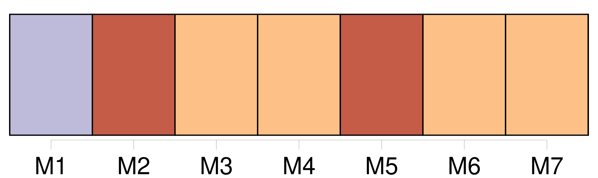
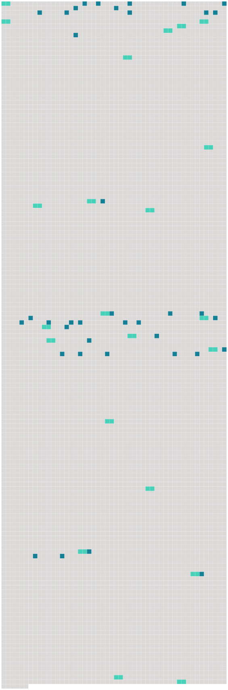

Longueur nb maillons : 60 mentions |
 |
[Tante Rude] nous attend au bout du chemin. En approchant, je vois bien que c'est [son] mari qu' [elle] regarde et non pas nous. [Elle] se tient plus droite et plus raide que jamais, et [son] visage me paraît plus autoritaire encore. Va-t [-elle] me gronder, de me faire rouler ainsi dans une voiture?? Je me souviens qu' [elle] n'aime pas les malades. Cependant, [elle] se penche sur moi pour m'embrasser, mais c'est du bout des lèvres, on dirait même avec dégoût.
Et sans un mot de bienvenue à mes parents, [elle] passe la barrière, et [marche] en avant comme si nous ne connaissions pas le chemin, et qu' [elle] fût venue seulement pour nous le montrer. À mon étonnement ce n'est pas chez [elle] qu' [elle] nous conduit. [2 phrases]
[Tante Rude] me l'apprend sans douceur, tandis que mon père et ma mère, avec des mots affectueux, et mille précautions m'installent dans un lit tout préparé. Mon installation finie, mes parents s'en vont au moulin avec [tante Rude] et oncle meunier. [2 phrases]
Manine s'appelle Marceline, comme [tante Rude] s'appelle Gertrude, mais ces deux noms trop difficiles à prononcer pour les jumeaux ont été transformés ainsi par eux, et personne ne songe à les rétablir. [1 phrases] [Tante Rude] l'a tout de suite employée aux travaux du moulin et des champs, puis, vers sa dix-huitième année, sans s'inquiéter de son goût, [elle] l'a mariée au garçon meunier qui touchait à la quarantaine. [10 phrases] À l'âge de six ans, alors que mes parents m'avaient confiée à [tante Rude] pour une assez longue convalescence, c'est Manine qui s'était occupée de moi. [35 phrases]
Levée avec le jour, elle change en hâte les langes de l'enfant, approche le berceau de mon lit, et s'en va en courant aider [tante Rude] au moulin, pour revenir plus vite encore aux heures de la tétée. [18 phrases]
Ces visites de Mme Lapierre déplaisaient fort à [tante Rude] , [qui] m'a tout de suite avertie que l'enfant était sans père et la mère sans mari.
Je ne vois rien de répréhensible à cela, comme a l'air de le penser [tante Rude] , et la compagnie de Mme Lapierre me devient de jour en jour plus agréable. [1 phrases]
Oncle meunier fait bon visage à la jeune femme, mais [tante Rude] me demande souvent : [52 phrases] [Tante Rude] [qui] ne peut supporter personne au repos m'apporte de la couture qu' [elle] retrouve souvent le soir telle qu' [elle] me l'a donnée le matin. C'est alors de [sa] part des reproches durs, et parfois sur un ton si élevé qu'ils attirent oncle meunier. [2 phrases] Il me parle surtout de [sa femme] en [l'] excusant : « Tu sais, [elle] n'est pas méchante, [elle] est seulement autoritaire. [Ses] parents [l'] ont tellement gâtée!! Et ce n'est pas [sa] faute si [elle] ne comprend rien aux enfants. [1 phrases]
Je crains de lui dire que si on a été trop bon pour [tante Rude] , en retour [elle] n'est guère douce aux autres. [6 phrases]
Et Manine qui doit rester deux jours absente vient de partir, tremblante et affreusement tourmentée, quoique [tante Rude] lui eût assuré qu' [elle] saurait bien faire accepter le biberon à la petite Reine. Ainsi que je m'y attendais, à l'heure de la tétée, [tante Rude] m'a laissé le soin de tenir [sa] promesse à Manine. [5 phrases] Le soir venu, [tante Rude] , [qui] ne pouvait gronder l'enfant s'en prit à moi, et m' [accusa] de maladresse.
[Elle] prépara un nouveau biberon qu' [elle] glissa sous mon oreiller, puis, sans plus se soucier de nous, [elle] tira la porte sur [elle] jusqu'au lendemain. [29 phrases] Cependant, ce ne fut pas à [tante Rude] qu'elle adressa ses remerciements. [32 phrases] [Tante Rude] pouvait se fâcher et crier, le soleil pouvait bouder derrière ses nuages, la pluie pouvait tomber à verse ou noyer de brouillard toute la campagne, rien de tout cela ne m'attristait. [29 phrases]
[Tante Rude] [qui] ne se souciait pas plus de ma peine que de ma joie, me chanta une autre chanson : Je [la] laissais dire pour ne pas [l'] entendre crier, car à cela j'avais une réponse précise. [11 phrases]
Oncle meunier ne parut pas trop surpris, et [tante Rude] [qui] le paraissait moins encore, offrit de m'aider à nettoyer et mettre en ordre notre propre maison qui était mitoyenne avec celle de Manine. [52 phrases]
Au grand contentement de [tante Rude] je demandai à faire la moisson en remplacement de Manine. [1 phrases]
[Tante Rude] me dit : « À quinze ans toutes les filles gagnent leur vie ». |
 |
Il est possible de télécharger la ressource sur la page Ortolang |
Si vous avez des questions ou vous voyez des erreurs, merci d'envoyer un mail à silvia.federzoni89@gmail.com |